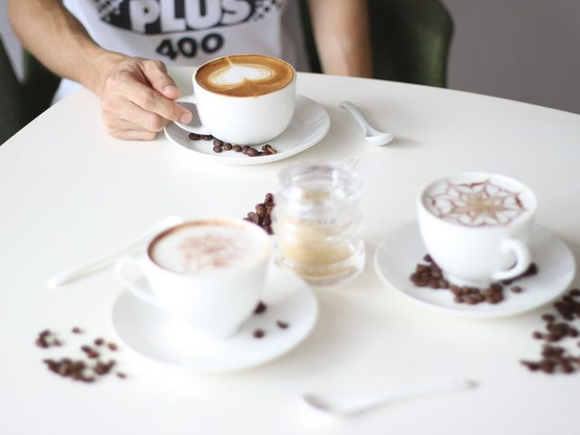
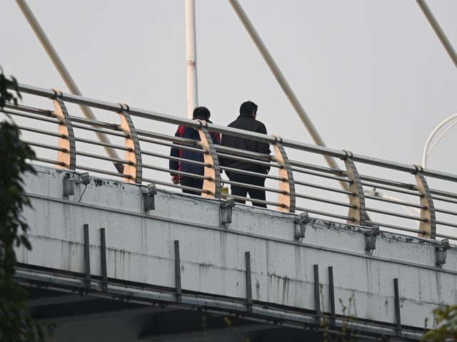
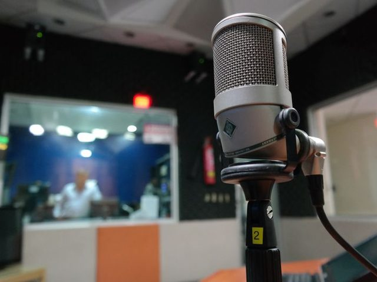
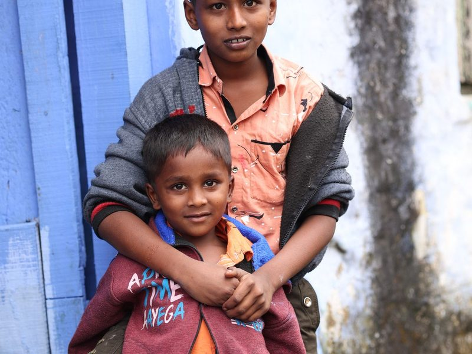
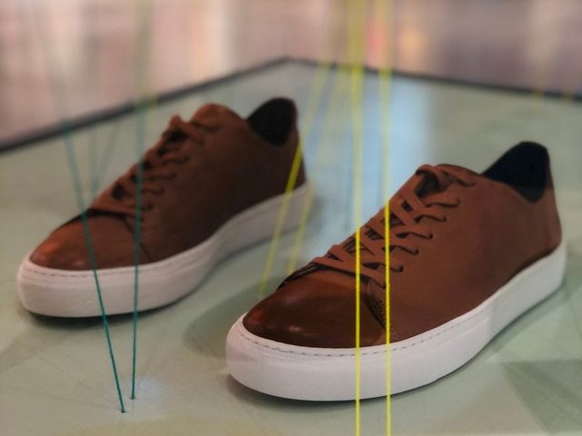
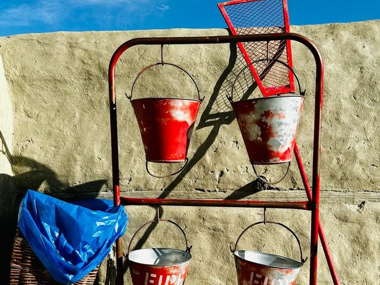
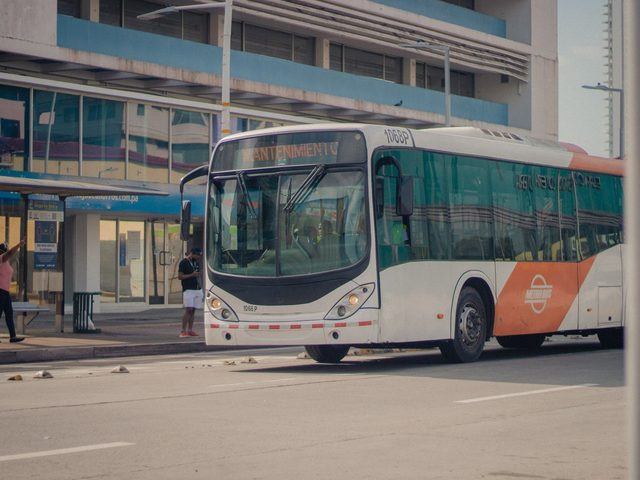
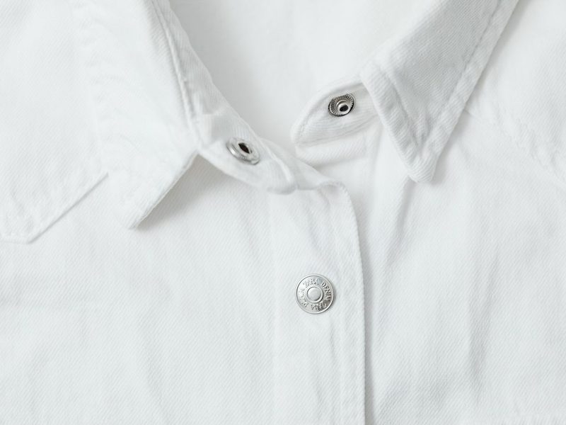
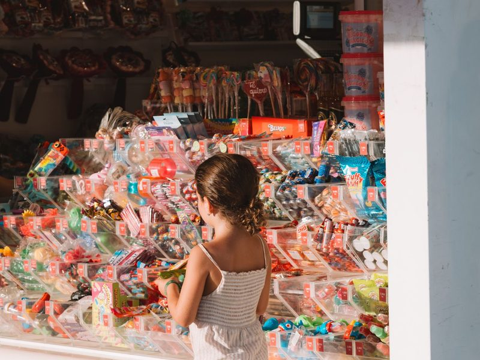

VOCABULARY · WORD UP 單字複習 UNIT 7
B-IV．B 開頭（四）
WORD UP「B-IV」的 33 個字（bread 到 buy）。紅色＝要複習，藍色標籤＝WORD UP 標熟記、還要在這裡考對。
共 33 個單字．點 🔊 聽發音

1breadn.
麵包
不可數；a piece／loaf of bread
I had bread and milk for breakfast.我早餐吃麵包配牛奶。

2breakv./n.
打破；休息
三態 break-broke-broken；take a break
Let's take a short break.我們休息一下吧。

3breakfastn.
早餐
have breakfast
Don't skip breakfast.不要不吃早餐。

4brickn.
磚塊
The old house is made of red bricks.那棟老房子是紅磚蓋的。

5bridgen.
橋
We walked across the bridge.我們走過那座橋。
6briefadj.
簡短的
in brief 簡單地說
He gave a brief speech.他做了簡短的演講。
7brightadj.
明亮的；聰明的
The room is bright and clean.這個房間明亮又乾淨。
8bringv.
帶來
三態 bring-brought-brought
Bring your umbrella. It may rain.帶雨傘，可能會下雨。
9Britainn.
英國
= the UK
London is the capital of Britain.倫敦是英國的首都。
10Britishadj./n.
英國的；英國人
She has a British accent.她有英國口音。
11broadadj.
寬的；廣的
= wide；名詞 breadth
The river is broad and deep.這條河又寬又深。

12broadcastv./n.
廣播；播放
The game will be broadcast live.這場比賽會現場轉播。

13brothern.
兄弟
older brother 哥哥
My older brother is in senior high.我哥哥讀高中。

14brownadj./n.
棕色的
She has long brown hair.她有一頭棕色長髮。

15brunchn.
早午餐
breakfast + lunch
We have brunch on Sundays.我們星期天吃早午餐。
16brushn./v.
刷子；刷
brush your teeth 刷牙
Brush your teeth before bed.睡前要刷牙。

17bucketn.
水桶
He filled the bucket with water.他把水桶裝滿水。

18buffetn.
自助餐
The hotel has a big breakfast buffet.飯店有豐盛的早餐自助餐。
19bugn.
小蟲；（程式）錯誤
There is a bug on your shirt.你的襯衫上有一隻小蟲。
20buildv.
建造
三態 build-built-built
They are building a new school.他們正在蓋一所新學校。
21buildingn.
建築物；大樓
Taipei 101 is a very tall building.台北 101 是一棟很高的大樓。
22bunn.
小圓麵包；包子
steamed bun 包子
I ate a meat bun for breakfast.我早餐吃了一個肉包。
23bundlen.
一捆；一束
a bundle of + 名詞
He carried a bundle of newspapers.他搬了一捆報紙。

24burnv.
燃燒；燒傷
Be careful. Don't burn your hand.小心，別燙到手。
25burstv.
爆裂；突然…
三態都是 burst；burst into tears 突然大哭
The balloon burst with a loud bang.氣球砰一聲爆了。

26busn.
公車
by bus 搭公車
I go to school by bus.我搭公車上學。

27businessn.
生意；事業
on business 出差
Dad is in Japan on business.爸爸去日本出差。

28businessmann.
商人
複數 businessmen
My uncle is a businessman.我叔叔是生意人。

29busyadj.
忙碌的
be busy + V-ing
Mom is busy cooking dinner.媽媽正忙著煮晚餐。

30buttern.
奶油
不可數
Put some butter on the bread.在麵包上抹點奶油。

31butterflyn.
蝴蝶
複數 butterflies
A butterfly landed on the flower.一隻蝴蝶停在花上。

32buttonn.
按鈕；鈕扣
press the button 按按鈕
Press the red button to start.按紅色按鈕開始。

33buyv.
買
三態 buy-bought-bought
I bought a new bag yesterday.我昨天買了一個新包包。
FOCUS
不規則動詞三態
| 原形 | 過去式 | 過去分詞 |
|---|---|---|
| break | broke | broken |
| bring | brought | brought |
| build | built | built |
| buy | bought | bought |
| burst | burst | burst |
| broadcast | broadcast | broadcast |
bring 帶來、buy 買：過去式都是 -ought 結尾，拼法不同（brought／bought）。
FOCUS
常考片語
| 說法 | 中文 | 例子 |
|---|---|---|
| take a break | 休息一下 | take a ten-minute break |
| brush one's teeth | 刷牙 | brush my teeth |
| be busy + V-ing / be busy with + N | 忙著做… | busy doing homework ／ busy with work |
| on business | 出差 | go to Tokyo on business |
| burst into tears | 突然大哭 | She burst into tears. |
| by bus | 搭公車（不加 a／the） | go to school by bus |